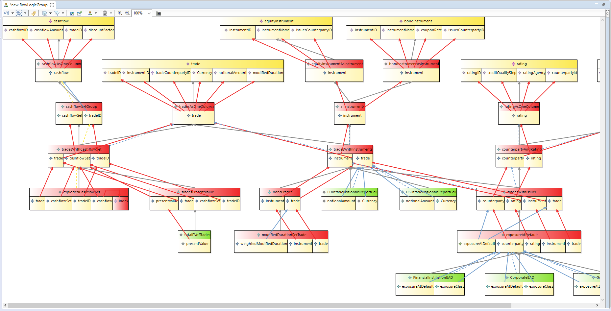

Model
Model
Model
UML
CoCaMo is a model, its defined as UML class diagrams and has documentation for each class and attribute, it has no operations.We build up model instances, they are stored as CoCaSon files.
CoCoMo focusses on 4 different parts of the model:
- Requirements
- Functional design
- Testing
CoCoMo for SMCubes adds the following parts to the model:
- Data Structures (defined by SMCubes)
- Input Data (which matches the dat structures)
Note that the input data can be linked to tests. input data is linked to data structures, requirements are linked to functional design, and functional design is linked to tests.
Note that the UML for data structures is basically the same as the UML of SMCubes .
An example of the UML for SMCubes is here:

A ‘model instance’ is a concrete instance of some classes (e.g. a VARIABLE with the name attribute set to ‘CountryOfResidence’ with an associated Domain Object with a name attribute set to ‘Countries’) .
Instances of the models can be stored as CoCaSon, and can be loaded into memory as in memory objects.
Technology-Independent API
For each UML model we provide an API of useful functions around that model, for example providing the results of queries on that model (e.g. to provide to a UI), or translating from one model to another .Typically, we split this API into model queries and more advanced manipulations which we call the component API.
Reference Implementation with UI
We provide an implementation of the models , model queries, component API, and models in Java, in particular we use the Eclipse Modelling Framework, which describes models using the Ecore standard.Ecore is an implementation of the EMOF standard for model driven engineering, provided by the Object Management Group who also manage the UML Standard.
We provide a visual user interface based on Eclipse Sirius model visualization tool. Other user interfaces could be built on top of the technology independent API.
Logical Data Model Ready:
SQLDeveloper to Ecore Translator
The SQLDeveloper to Ecore Translator allows us to translate a Logical Data Model written in SQLDeveloper, into a model defined in the open-source Ecore standard.There are multiple open source libraries based around the Ecore standard for visualization, text representation, model comparison, model management , model transformation (e.g. to another standard like SDD\SMCubes )
Forward Engineering with VTL Migration
Using the Eclipse Edapt open source library for forward engineering models, and migrating model data, we look to provide a solution whereby we can easily define forward engineering of the BIRD Logical Data Model, while at the same time generating equivalent transformations to translate data from the forward engineered model into the Logical Data Model (and vice versa). This can complement a set of transformations which start from the Logical Data Model.Logical Data Model Text Navigator
An important advantage of using a text based version of the model is that we can have very detailed version control, using standard tools such as git which have great tools support in code editors.We use Eclipse Xcore as a means of describing and navigating models in a means that is easier than navigating the current very large diagram. As Eclipse XCore uses Eclipse Xtext , and Eclipse XText supports the language server protocol, the we can integrate this with any code editor that works with the language server protocol, such as Microsoft VSCode and Eclipse Theia or Eclipse IDE.
The XCore text representing an Ecore model is generated at the click of a button.
VTL++
VTL++ is a small addition to VTL to make it easier to deal with structures like the Logical Data Model which include subtypes, this small change can make for much more concise transformations in BIRD which are more flexible as data structures change.The changes are the addition of structs and arrays which are part of the SQL99 standard, and a very simple approach to subtyping which is easy to work with .
An existing open language called TRL (Traceable Reporting Language), which is very similar to VTL and uses SMCubes as its data structures, already has these features, and has a translator to an advanced lineage model which shows the relevant lineage of programs.
TRL can be considered as a Proof Of Concept for VTL++, and we will use experience from TRL to create VTL++.
Any VTL++ engine will also be able to execute VTL as VTL is a subset of VTL++
We show here a visualization of the lineage model derived from a TRL program:
